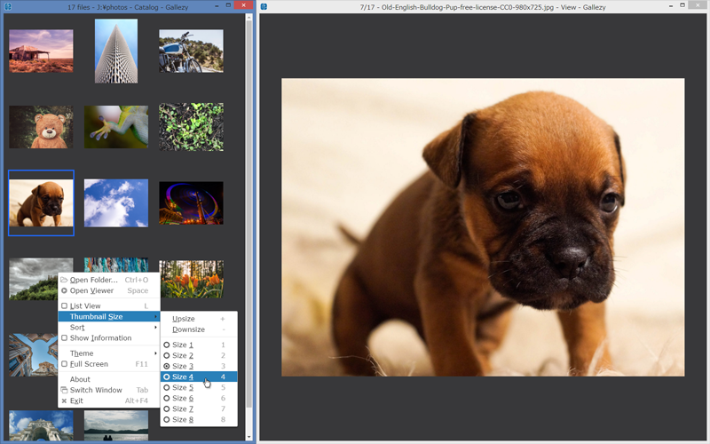

Super Simple Image Gallery App

- You have to learn nothing to use Gallezy.
- You have to configure nothing for Gallezy.
You can operate all of Gallezy by context menu.
Download
Since these don't have code signing, you should check a checksum.
Instant way to get checksum of a file for Windows is hashfile-contextmenu. And shasum or sha256sum commands for others.
Install
Extract a Gallezy folder from a downloaded file, and save it into your hard disk.
For Windows, you can add a command into context menu of Windows Explorer by double-clicking a file ContextMenu.vbs in the Gallezy folder, after saving it.
Start Gallezy
Open a file in the Gallezy folder you saved:
Gallezy.exeon WindowsGallezy.appon OS XGallezyon Linux
Or drag-and-drop a target folder that contains image files onto a Gallezy icon.
Or right-click the target folder, and select a Open with Gallezy command in context menu, or press Z key.
After starting, you can also open the target folder by dropping the folder onto a Gallezy window or its icon, or pressing Ctrl+O keys.
Uninstall
If you added a command into context menu of Windows Explorer, double-click a file ContextMenu.vbs to remove the command.
Remove two folders the Gallezy folder you saved and:
%APPDATA%\Gallezyfolder on Windows~/Library/Application Support/Gallezyfolder on OS X$XDG_CONFIG_HOME/Gallezyor~/.config/Gallezyfolder on Linux